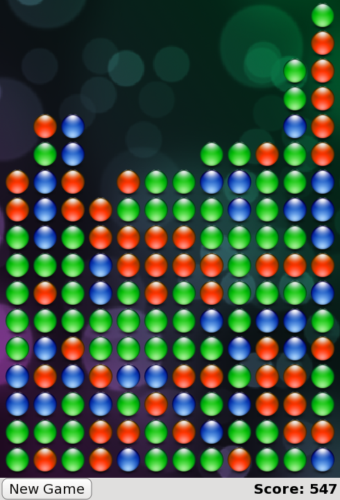

QML Advanced Tutorial 3 - Implementing the Game Logic
Making a Playable Game
Now that we have all the game components, we can add the game logic that dictates how a player interacts with the blocks and plays the game until it is won or lost.
To do this, we have added the following functions to samegame.js:
handleClick(x,y)floodFill(xIdx,yIdx,type)shuffleDown()victoryCheck()floodMoveCheck(xIdx, yIdx, type)
As this is a tutorial about QML, not game design, we will only discuss handleClick() and victoryCheck() below since they interface directly with the QML types. Note that although the game logic here is written in JavaScript, it could have been written in C++ and then exposed to QML.
Enabling Mouse Click Interaction
To make it easier for the JavaScript code to interface with the QML types, we have added an Item called gameCanvas to samegame.qml. It replaces the background as the item which contains the blocks. It also accepts mouse input from the user. Here is the item code:
Item {
id: gameCanvas
property int score: 0
property int blockSize: 40
width: parent.width - (parent.width % blockSize)
height: parent.height - (parent.height % blockSize)
anchors.centerIn: parent
MouseArea {
anchors.fill: parent
onClicked: (mouse)=> SameGame.handleClick(mouse.x, mouse.y)
}
}
The gameCanvas item is the exact size of the board, and has a score property and a MouseArea to handle mouse clicks. The blocks are now created as its children, and its dimensions are used to determine the board size so that the application scales to the available screen size. Since its size is bound to a multiple of blockSize, blockSize was moved out of samegame.js and into samegame.qml as a QML property. Note that it can still be accessed from the script.
When clicked, the MouseArea calls handleClick() in samegame.js, which determines whether the player's click should cause any blocks to be removed, and updates gameCanvas.score with the current score if necessary. Here is the handleClick() function:
function handleClick(xPos, yPos) {
var column = Math.floor(xPos / gameCanvas.blockSize);
var row = Math.floor(yPos / gameCanvas.blockSize);
if (column >= maxColumn || column < 0 || row >= maxRow || row < 0)
return;
if (board[index(column, row)] == null)
return;
//If it's a valid block, remove it and all connected (does nothing if it's not connected)
floodFill(column, row, -1);
if (fillFound <= 0)
return;
gameCanvas.score += (fillFound - 1) * (fillFound - 1);
shuffleDown();
victoryCheck();
}
Note that if score was a global variable in the samegame.js file you would not be able to bind to it. You can only bind to QML properties.
Updating the Score
When the player clicks a block and triggers handleClick(), handleClick() also calls victoryCheck() to update the score and to check whether the player has completed the game. Here is the victoryCheck() code:
function victoryCheck() {
//Award bonus points if no blocks left
var deservesBonus = true;
for (var column = maxColumn - 1; column >= 0; column--)
if (board[index(column, maxRow - 1)] != null)
deservesBonus = false;
if (deservesBonus)
gameCanvas.score += 500;
//Check whether game has finished
if (deservesBonus || !(floodMoveCheck(0, maxRow - 1, -1)))
dialog.show("Game Over. Your score is " + gameCanvas.score);
}
This updates the gameCanvas.score value and displays a "Game Over" dialog if the game is finished.
The Game Over dialog is created using a Dialog type that is defined in Dialog.qml. Here is the Dialog.qml code. Notice how it is designed to be usable imperatively from the script file, via the functions and signals:
import QtQuick Rectangle { id: container function show(text) { dialogText.text = text; container.opacity = 1; } function hide() { container.opacity = 0; } width: dialogText.width + 20 height: dialogText.height + 20 opacity: 0 Text { id: dialogText anchors.centerIn: parent text: "" } MouseArea { anchors.fill: parent onClicked: hide(); } }
And this is how it is used in the main samegame.qml file:
Dialog {
id: dialog
anchors.centerIn: parent
z: 100
}
We give the dialog a z value of 100 to ensure it is displayed on top of our other components. The default z value for an item is 0.
A Dash of Color
It's not much fun to play Same Game if all the blocks are the same color, so we've modified the createBlock() function in samegame.js to randomly create a different type of block (for either red, green or blue) each time it is called. Block.qml has also changed so that each block contains a different image depending on its type:
import QtQuick Item { id: block property int type: 0 Image { id: img anchors.fill: parent source: { if (type == 0) return "pics/redStone.png"; else if (type == 1) return "pics/blueStone.png"; else return "pics/greenStone.png"; } } }
A Working Game
Now we now have a working game! The blocks can be clicked, the player can score, and the game can end (and then you can start a new one). Here is a screenshot of what has been accomplished so far:

This is what samegame.qml looks like now:
import QtQuick import "samegame.js" as SameGame Rectangle { id: screen width: 490; height: 720 SystemPalette { id: activePalette } Item { width: parent.width anchors { top: parent.top; bottom: toolBar.top } Image { id: background anchors.fill: parent source: "pics/background.jpg" fillMode: Image.PreserveAspectCrop } Item { id: gameCanvas property int score: 0 property int blockSize: 40 width: parent.width - (parent.width % blockSize) height: parent.height - (parent.height % blockSize) anchors.centerIn: parent MouseArea { anchors.fill: parent onClicked: (mouse)=> SameGame.handleClick(mouse.x, mouse.y) } } } Dialog { id: dialog anchors.centerIn: parent z: 100 } Rectangle { id: toolBar width: parent.width; height: 30 color: activePalette.window anchors.bottom: screen.bottom Button { anchors { left: parent.left; verticalCenter: parent.verticalCenter } text: "New Game" onClicked: SameGame.startNewGame() } Text { id: score anchors { right: parent.right; verticalCenter: parent.verticalCenter } text: "Score: Who knows?" } } }
The game works, but it's a little boring right now. Where are the smooth animated transitions? Where are the high scores? If you were a QML expert you could have written these in the first iteration, but in this tutorial they've been saved until the next chapter - where your application becomes alive!